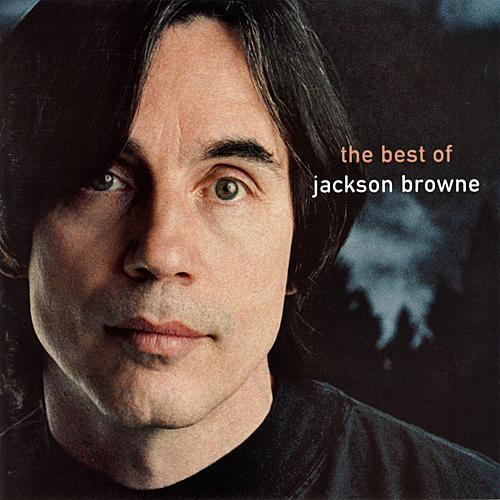

Essays:
The Rebel Jesus – Song by Jackson Browne
04 Dec 2020 · 3 min read

Listen on Apple Music.
Jackson Browne's Christmas song is everything one might hope for from a singer-songwriter whose career has combined political activism with a deeply personal romanticism.
His first verse paints a traditional holiday scene for us, with elements that Charles Dickens would have easily recognized. The only hint of what is to come lies in the reference at the very end to the “birth of the rebel Jesus.” This is a phrase that would usually refer to “baby Jesus,” and the replacement of that expected word with “rebel” immediately alerts us that something a little less traditional may be headed our way.
All the streets are filled with laughter and light
And the music of the season.
And the merchants’ windows are all bright
With the faces of the children.
And the families hurrying to their homes,
As the sky darkens and freezes,
Will be gathering around their hearths and tables,
Giving thanks for God’s graces
And the birth of the rebel Jesus.
In the second verse Browne turns his attention to those who profess to worship Jesus, starting with descriptions of ways in which people call upon him, but ending by suggesting the hypocrisy of some who claim to follow his teachings.
They call him by the “Prince Of Peace,”
And they call him by “The Saviour.”
And they pray to him upon the sea,
And in every bold endeavor.
And they fill his churches with their pride and gold,
As their faith in him increases.
But they’ve turned the nature that I worship in
From a temple to a robber’s den,
In the words of the rebel Jesus.
Finally, in the third and penultimate verse, Browne paints a very different picture of the holidays, as celebrated by a materialistic society containing deeply entrenched mechanisms of systemic inequality.
We guard our world with locks and guns,
And we guard our fine possessions.
And once a year when Christmas comes,
We give to our relations.
And perhaps we give a little to the poor,
If the generosity should seize us.
But if anyone of us should interfere
In the business of why there are poor,
They get the same as the rebel Jesus.
But now, after pointing out the inequality in our society, Browne backs off a bit and admits we may have earned the right to enjoy ourselves a little after all.
But pardon me if I have seemed
To take the tone of judgement.
For I’ve no wish to come between
This day and your enjoyment.
In a life of hardship and of earthly toil,
There’s a need for anything that frees us;
So I bid you pleasure and I bid you cheer
From a heathen and a pagan,
On the side of the rebel Jesus.
Browne’s last two lines make it clear that, while he is happy to celebrate the Christmas holiday with us, he does so as someone who appreciates the words and deeds of Jesus, but not as one who grants him any divinity, nor as one associated with any form of organized religion.
For me Browne manages to touch all the bases here: he invokes the traditional joys of Christmas, provides some meaningful insight into the deeper meanings of the holiday, and does all this within a strongly humanistic context.
The song’s music is simple but appropriate to its subject matter. Each verse starts at a slow and stately pace, then becomes more energetic as it hits the halfway point, and finally slows again in order to deliver its last line, always ending with a new reference to Jesus.
There are several nice versions of this song. Jackson Browne has released a couple of versions himself, one on a Christmas album by The Chieftains, and another on his own “Best of” album. One of my favorites, though, is by Martha Wainwright and Lily Lanken on the CD The McGarrigle Christmas Hour.
Note that some cover versions omit the beginning article from the song’s title, so it’s best to just search for “Rebel Jesus” if you’re trying to find alternate performances of the song.
Next: “Father Christmas” by The Kinks
Or see the complete list of Christmas Favorites from The Practical Utopian.